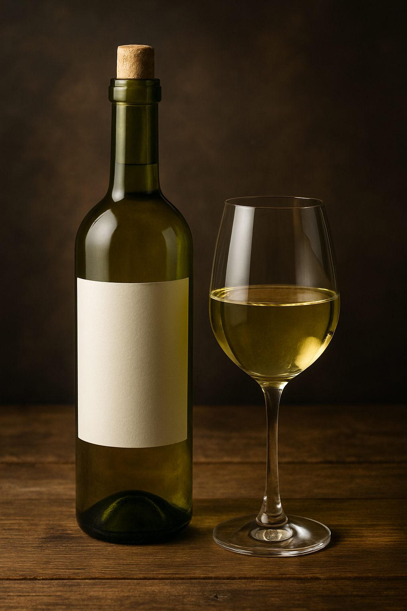
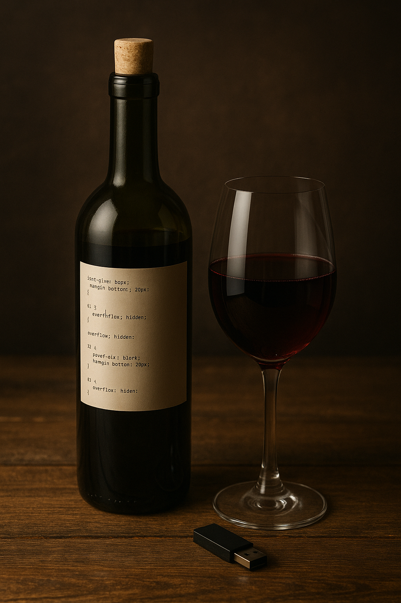
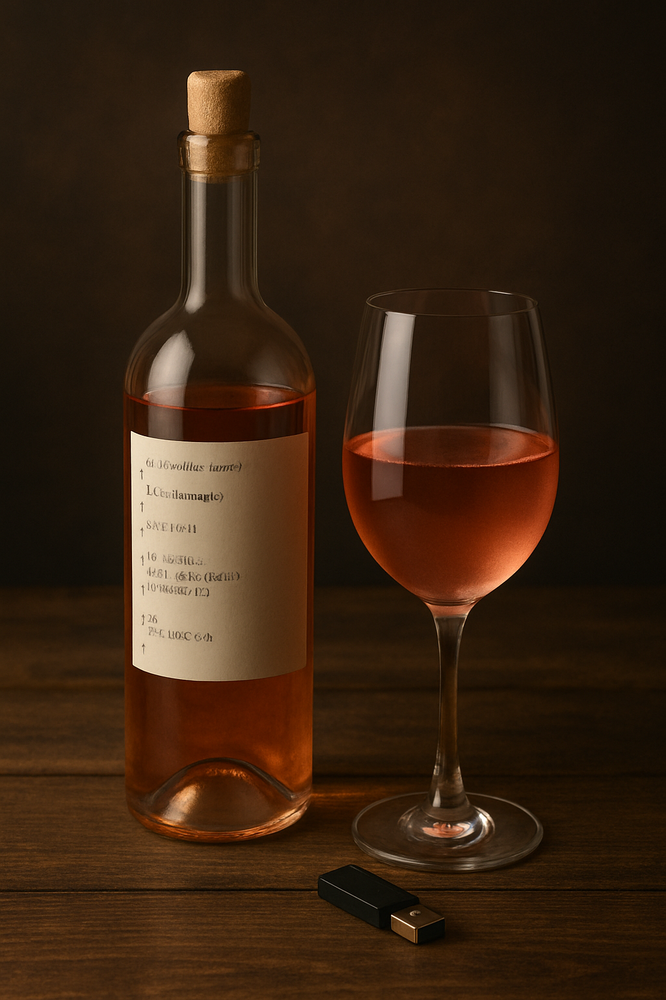
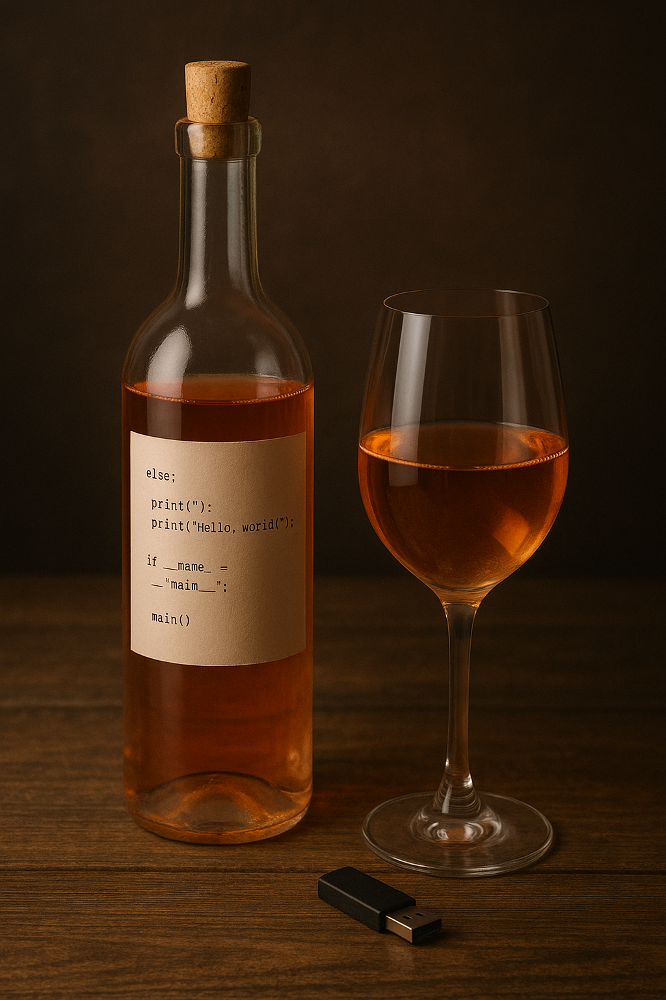

White Wines
- Chablis
- Sauvignon Blanc
- Riesling
Red Wines
- Santa Maria Valley Pinot Noir
- Italian Sangiovese / Nebbiolo
- Châteauneuf-du-Pape
Rosé Wines
- Txakoli Rosé (Spain)
- Provence Rosé (France)
- White Zinfandel Rosé (USA)
Orange Wines
- Ramato (Italy)
- Jura Orange Wine (France)
- Georgian Traditional Orange Wine
For wine reviews and community ratings, visit Vivino.